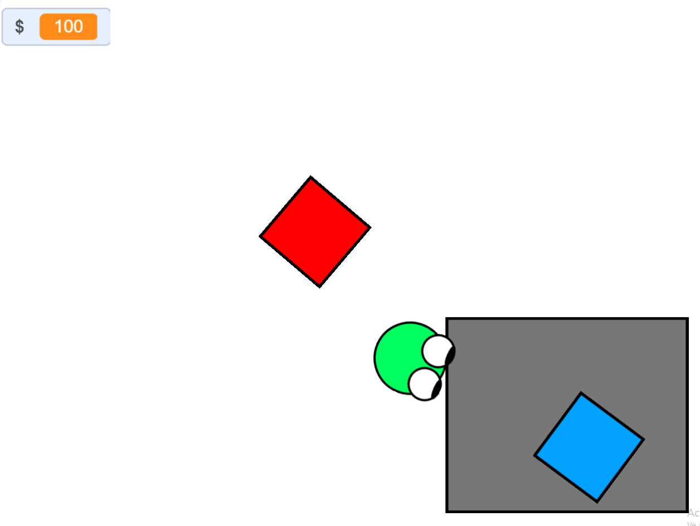

repo vercion scrach
Es una base para una version de vista desde los aires para el juego grupal r.e.p.o que no tiene enemigos ni cambios de escena. El proyecto que tengo el mi computadora no es una version avanzada, esta está en el salon de computación del cole. Una de las caracteristicas es que podes mover objetos y colocarlos en un lugar para mostrar cuanto valen y mueve la boca cuando suena algo fuerte y hay un error
 Descargar el proyecto (preucaucion va a descargar el projecto no tocar muchas veces y lo ciento por el decorden)